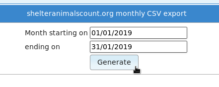

Appendix: Frequently Asked Questions¶
How do I add new vaccination types, breeds or internal locations?¶
Go to , and then choose them from the dropdown list at the upper right side of the screen.
How do I bring an animal back to the shelter after adoption, transfer or fostering?¶
Open the animal’s record and go the Movements tab. Find the current adoption, transfer or foster movement, edit it and set a return date.
Where do I get some reports?¶
Go to , then click the “Browse sheltermanager.com” button. You can choose reports from the list and use the “Install” button to add them to your database.
Why am I seeing “animal not in location filter/site” when I open a record?¶
You’ve applied a “location filter” to your account. A location filter is a list of locations attached to a user account that prohibits the user from seeing animals who are not in one of those locations. To remove it, go to and remove the location filter items from your account.
Why is my animal marked not available for adoption?¶
ASM assumes that any on shelter animal is adoptable, unless it has the “Not for adoption” flag explicitly set on it.
There are then a set of rules applied to decide whether or not an animal is excluded from being adoptable. You can edit those rules under . The rules can exclude animals that don’t have a photo, are in a foster home or part of a cruelty case, are under a certain age, etc.
If an animal is not adoptable due to any of those rules, when you view its record, you will see the words “Not for adoption” in the banner at the top of the record and directly underneath that in brackets the rule that has excluded the animal from being adoptable.
Why are my non-shelter and adopted animals appearing on the vaccination book?¶
The option controls whether or not off-shelter animals appear in the vaccination book, medical book, test book and are highlighted in alerts on the home page. By default, this option is off.
Why are my non-shelter and adopted animals being shown on my website?¶
You’ve likely set the “Courtesy Listing” flag for that animal.
The purpose of that flag is to force animals that wouldn’t normally be adoptable to appear on websites and be sent to third parties for publicity. Common scenarios for this are non-shelter owned animals or previously adopted animals where the owner is handling the adoption, but the shelter is helping to publicise the animal.
Why can’t I edit the date brought in field?¶
The option will cause the edit animal screen to lock any fields that make up part of the shelter code. For example, if your coding format contains T for the type, the type field will be locked for editing when this option is on. If your coding format has any of YYYY, MM or DD for a portion of the date brought in, that field will be locked too.
When I create a payment I get “No source account found for donation type, can’t create trx”?¶
You’ve turned on the option to have payments create matching accounting transactions under
The error is occurring because your payment type is not linked to an income account under . To fix this, either disable the option to create matching accounting transactions if you are not using the accounts. Or, you can create a new income account in the accounts screen and link it to your payment type with the dropdown.
The message itself is only a warning to tell you an accounting transaction could not be created, it is not stopping your payment from being created.
Why can’t I view my person record?¶
You’ve linked a person record to your user account. This should only be done when you want to forbid a user account from viewing a person record and is there to prevent staff members from editing their own person records.
You can unlink the person record by going to , editing your user account and using the trash can icon to the right of “Staff Record” to break the link. Breaking the link will not delete the person record or user account.
How do I integrate my adoptable animals with my website?¶
I uploaded the wrong picture for an animal, but it’s “stuck”?¶
Your browser caches the thumbnail images for each animal. If you upload the wrong picture, then delete it and upload the correct picture your browser will continue to show the old picture.
To fix this, invalidate your browser’s cache when looking at the animal’s record by pressing CTRL+R or F5 to reload all images from the server. This does not work as well in some versions of Internet Explorer and if you are using that, you can try and delete temporary internet files.
Why do I get “page 1 of 1” in the header when I print documents?¶
Your web browser is adding these header and footers. Where you turn them off depends on your web browser:
Internet Explorer: Open Page Setup from the printer icon on the toolbar or File menu. Delete the header and footer strings in the “Headers and Footers” section
Firefox: Choose Page Setup from the File menu (press ALT if it is not visible). Click on the Margins & Header/Footer tab and choose –blank– from all the dropdowns in the Headers and Footers section.
Chrome: Untick the “Print headers and footers” box in the print preview screen.
My scanned confidential documents are being published on my website / PetFinder!¶
You’ve attached scanned documents as JPEG images to animal records. You should NEVER do this!
They can be published outside the shelter, which you do not want.
They aren’t relevant to someone browsing an animal bio online.
ASM scales down incoming pictures for the web, assuming any pictures you upload are always going to be photos rather than text. This means smaller text on documents you scan as JPEG could become unreadable.
Instead, you should always attach your scanned documents as PDF files. ASM scales PDFs in a different way so that they don’t lose clarity and legibility, it will never publish a PDF to any website.
ASM does have a handy function to help if you do upload an image containing text, you can select an image on the media tab and choose to create a new PDF file that contains your image. Once you’re happy with the PDF you can safely delete the image to prevent it going anywhere.
Why can’t I send certain fields to PetFinder?¶
PetFinder’s import spec only allows for the following items of information to be sent by ASM (or any third party system):
Code, Name, Breed, Mix, Sex, Size, Color 1-3, Age, Bio/Description, Type, Shots, Altered, NoDogs, NoCats, NoKids, Housetrained, Declawed, SpecialNeeds, 6 x Photos, Arrival Date, Birth Date, Special Needs Notes, Adoption Fee, Display Adoption Fee Y/N
Note that the spec only allows ASM to state whether an animal is bad with other animals, but not if it is good with them. It also will not accept video URLs or any other field that PetFinder have on their site that is not listed here.
While color is accepted by PetFinder, we do not support sending it. The reason is that our color field is a single user customisable dropdown. PetFinder split the color into 3 dropdowns of separate colors and have very strict validation rules on which combinations are allowed for different species of animals. It is therefore impossible to map our color scheme to theirs in a way that won’t cause many of your animal listings to be rejected.
Why are ASM emails being sent from account@bounce.sheltermanager.com?¶
In the early days of email, address spoofing was used by everyone. It was an easy way ensuring an email came back to you no matter what servers your message passed through.
Unfortunately, this also made it easy for spammers to fake where their emails were coming from and to send a lot of backscatter (failure notices) to innocent victims.
Most large email services today, such as gmail, hotmail and yahoo use technologies called SPF and DKIM. These allow a domain to state which mail servers are allowed to relay email on its behalf. For example, the hotmail.com domain states that nothing but the hotmail servers are allowed to send any messages that come from a hotmail.com address.
When a message arrives at an email server using these technologies, it checks the domain the email is from and then checks to see whether the server it received that message from is allowed to send email for that domain. If it isn’t, the message is put straight into the spam folder of the recipient or in some cases, rejected outright.
This is very helpful in filtering spam, but it means that ASM cannot send emails that appear to come from your address (particularly if you have a hotmail or gmail address) - otherwise most mail services will either refuse delivery of your message or put it straight in the spam folder for the recipient.
Instead, ASM sends emails from the fixed address you configured in sitedefs and trusts you know what you’re doing. sheltermanager.com sends emails from a account@bounce.sheltermanager.com address. Your real email address is set in the Reply-To email header, which email clients will honour when someone replies to your message. So while they’ll see the message as appearing to come from account@bounce.sheltermanager.com, when they hit the reply button in their email client, the email they create will have a to address of you@youremail.com instead.
In the case of sheltermanager.com, if someone does accidentally reply to a account@bounce.sheltermanager.com address, the sheltermanager email server will find your account and send the email through to you, or find a Reply-To header in the quoted message if one exists and send it to that.
Why has my colour scheme reset?¶
Originally, ASM allowed you to set a system-wide theme for all users. It no longer does this. We decided to remove that behaviour for a number of reasons:
A single system theme means users all have the same, consistent starting point
What users see on screen when they start using ASM matches the screenshots in the documentation and help videos.
The system now follows the law-of-least-surprise as users will only ever see the theme they’ve chosen themselves and others can no longer change it for them.
All users can choose their theme/colour scheme by clicking on their username at the top right, and then the “Change User Settings” menu option.
If I delete a user, will it delete everything they created?¶
No. You can safely delete user accounts and it will not delete any data.
Can I undo a CSV import?¶
Yes. All CSV imports are tagged with the user “import/USER” where USER is the user account that ran the import.
You can run the following script at to remove everything imported by anyone after the 1st January, 2017:
DELETE FROM animal WHERE CreatedBy LIKE 'import%' AND CreatedDate > '2017-01-01';
DELETE FROM animalcost WHERE CreatedBy LIKE 'import%' AND CreatedDate > '2017-01-01';
DELETE FROM animalvaccination WHERE CreatedBy LIKE 'import%' AND CreatedDate > '2017-01-01';
DELETE FROM animalmedical WHERE CreatedBy = 'import%' AND CreatedDate > '2017-01-01';
DELETE FROM animalmedicaltreatment WHERE CreatedBy LIKE 'import%' AND CreatedDate > '2017-01-01';
DELETE FROM animaltest WHERE CreatedBy LIKE 'import%' AND CreatedDate > '2017-01-01';
DELETE FROM owner WHERE CreatedBy LIKE 'import%' AND CreatedDate > '2017-01-01';
DELETE FROM animalcontrol WHERE CreatedBy LIKE 'import%' AND CreatedDate > '2017-01-01';
DELETE FROM adoption WHERE CreatedBy LIKE 'import%' AND CreatedDate > '2017-01-01';
DELETE FROM ownerdonation WHERE CreatedBy LIKE 'import%' AND CreatedDate > '2017-01-01';
DELETE FROM ownerlicence WHERE CreatedBy LIKE 'import%' AND CreatedDate > '2017-01-01';
How do I export my data to shelteranimalscount.org?¶
There’s a special report that will export your monthly figures to shelteranimalscount.org for upload via their CSV import tool.
To install it, open the reports menu:

Use the “Browse sheltermanager.com” button to install new reports. Enter part of the name in the search box at the top of the title column, select the report you wish to install by ticking the box to the left of it and clicking the “Install” button.

Once installed, use the Export Reports as CSV option to run the report:

Click its name in the list:

Finally, enter the start and end dates of the calendar month that you’d like to generate the figures for.
Note
The report will only work correctly for one calendar month. Run the report multiple times for multiple months.
Note
While this process can still be done manually, it has been superceded by the shelteranimalscount.org publisher, which will automatically update your figures every month without user intervention via their API.
How do I export my data from the system for import somewhere else?¶
The “Export” button under allows you to export your data in various formats. You can export a number of CSV files containing data from different areas of the system for reading via spreadsheet software. You can also export a database dump for use with either self-hosted ASM3 or our older ASM2 desktop software.
The files/options include:
dump.sql: A database independent SQL script that contains DELETE and INSERT statements to recreate all of the database tables. By itself, this file can only be used to restore your data in a database that already contains the existing ASM tables. If you want to install your data in a new database, you will have to run one of the DDL files first for your database platform.
ddl_mysql.sql: The database schema for MySQL database backends.
ddl_postgresql.sql: The database schema for PostgreSQL database backends.
ddl_db2.sql: The database schema for IBM DB2 database backends.
asm2.sql: A complete HSQLDB database script for use with the ASM2 desktop software.
animal.csv: All animal and adopter/movement information for viewing with spreadsheet software.
incident.csv: All call/incident information for viewing with spreadsheet software.
licence.csv: All animal licence information for viewing with spreadsheet software.
media.csv: Information about all media files for viewing with spreadsheet software.
medical.csv: All animal medical histories for viewing with spreadsheet software.
person.csv: All person information for viewing with spreadsheet software.
payment.csv: All payment information for viewing with spreadsheet software.